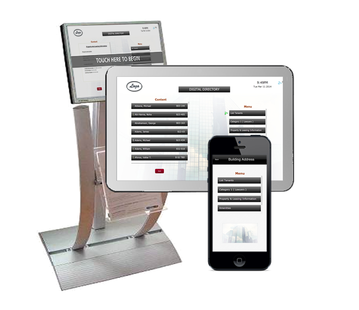

What is Interactive Directory?
- Interactive Directory is an easy to use, intuitive and cost effective solution that ensures efficiency while providing valuable information to the visitors.
- It is the next step in building directory integration, providing a flexible and comprehensive remedy to a lingering problem.
- An attractive display for property and leasing information at every guest’s finger tips.
Features:
-
Inform visitors of recent events, nearby amenities and tenant details through a convenient, easily accessible interface.
- All updates to the directory are made effortlessly through a coherent content management dashboard.
- An additional stream of revenue with Ad placement during periods of inactivity.